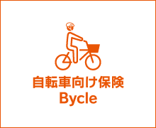
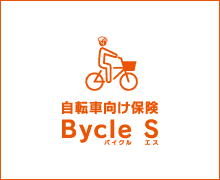

au損保は、全国の各自治体と
「自転車の安全利用に向けた協定」を締結！
自治体への寄付などを通じ、
安全で安心な自転車ライフの実現を
推進しています！
au損保の自転車向け保険を通じたCSR活動について
au損害保険株式会社は、全国の自転車を利用される皆さまが、自転車をより安全で快適に利用できる環境を目指した取組みを行っております。
取組みの１つとして各自治体と「自転車の安全利用に向けた協定」を締結、両者が協力し各自治体における自転車の安全利用に向けた啓発活動や自転車向け保険の普及に努めています。また、寄付制度を伴う協定が締結された自治体にお住まいの皆さまが加入された弊社契約に応じて、各自治体の自転車の安全利用啓発活動やヘルメット着用普及などの為に寄付を実施いたします。
au損保は、万が一の備えである自転車向け保険の普及に努め、皆さまの安全で安心な楽しい自転車ライフをサポートしてまいります。
協定を締結した自治体
今後も、協定の締結先(自治体)を順次拡大していきます!!
| 宮城県 | 宮城県との協定について |
|---|---|
| 新潟県 | 新潟県との協定について |
| 埼玉県 | 埼玉県との協定について |
| 東京都 | 東京都との協定について |
| 神奈川県 | 神奈川県との協定について |
| 滋賀県 | 滋賀県との協定について |
| 大阪府 | 大阪府との協定について |
| その他の自治体 | 京都府・京都市・名古屋市・羽島市・千葉市・仙台市 |
|---|
自治体への寄付制度について
- 本制度は、au損保が創設した寄付制度です。
- 寄付制度を伴う協定が締結された自治体にお住まいの方が寄付対象契約にご契約いただくと、au損保がその保険料収益の一部をその自治体に寄付いたします。寄付金は、各自治体を通じて自転車の安全利用啓発活動やヘルメット着用普及などに役立てられます。
寄付対象契約
寄付対象契約は各自治体ごとに異なります。
東京都・神奈川県・埼玉県・新潟県・滋賀県・宮城県
-
 -
-
 -
大阪府
※ 注) CYCLE PARTNER（サイクルパートナー）は、取扱代理店 株式会社あさひの専用商品です。
【注意事項】
- お客さまから寄付をしていただくものではなく、ご契約の引受保険会社であるau損保が寄付を行うものです。
- 寄付対象となる当該自治体にお住まいの方のご契約内容と、当該自治体以外にお住いの方のご契約内容に違いはありません。
- 寄付先の団体は、当該自治体指定の団体になりますが、期中で変更される場合があります。
自転車保険の加入義務について
全国で自転車保険の加入を義務づける自治体が増えています。
義務の対象となる主な地域や、自転車保険選びのポイント等について分かりやすく解説したページはこちら
自転車保険の加入義務に関するチラシ等はこちらから無料でダウンロードできます。
自治体との取り組みについて
au損保は、各自治体や自転車関連企業と連携し、自転車利用に関するルール・マナー等の情報を広くお伝えする活動を行っています。

2019年4月現在の協定の締結先を記載しております。